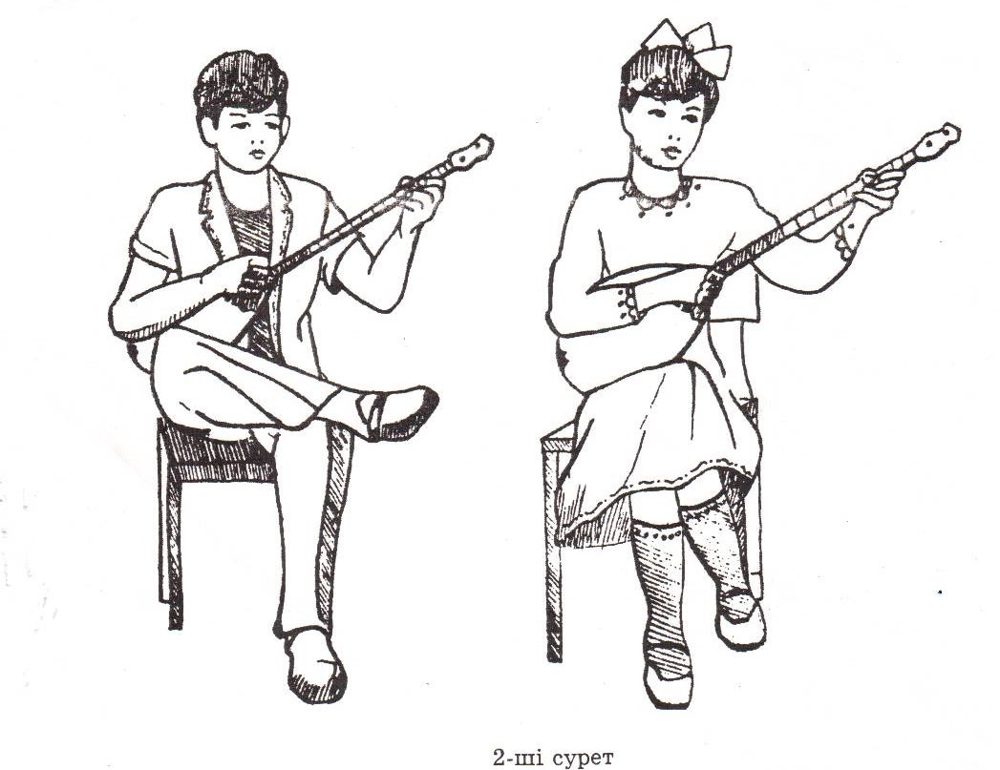
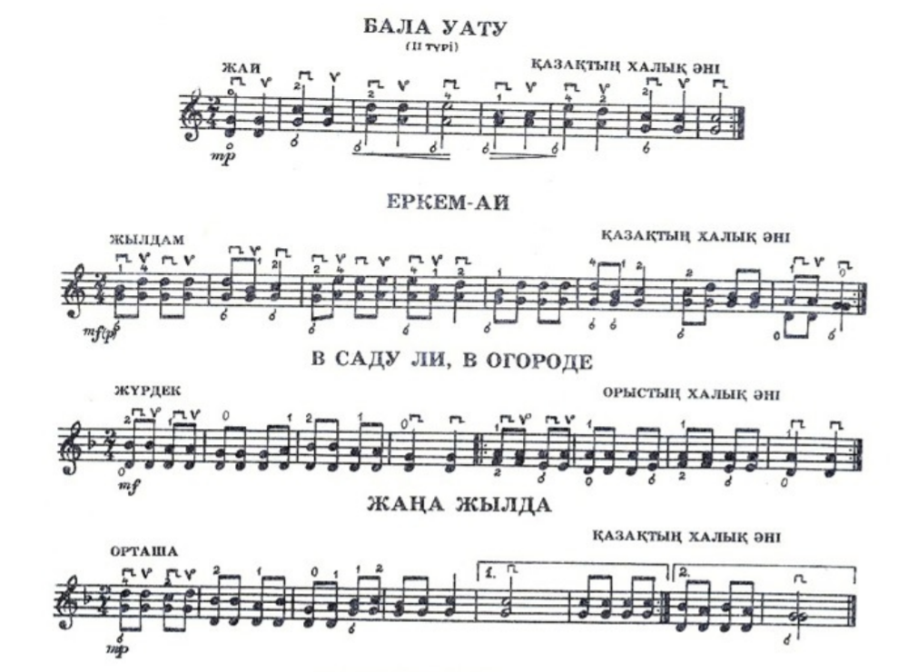

Екі ішектің бірін қатты, бірін сәл-пәл кем бұра,
Қазақ-нағыз қазақ емес, Нағыз қазақ-домбыра.
-Қадір Мырзалиев
Домбыра — қазақтың ішекті музыкалық аспабы. Шанағы көбінесе алмұрт пішіндес болып келеді, мойны өте ұзын, пернелермен бөлінген. Басты мақсат жасөспірімдерге домбыра үнімен, домбыра сарынымен тегін білуге үйрету болды. Себебі домбыраның бойында ата-бабаның рухы жатыр. «Домбыра деген – қазақ, қазақ деген – домбыра» деген теңеудің жаны бар. Бағдарламаның негізгі мақсаты өзінің тілін, дінін, дәстүрін, өнерін, әдеп- ғұрыптарын біліп, халқының асыл қазынасының мұрагері сезінетін, өз елін, туған жерін, ата мекенін сүйетін Қазақстан Республикасының азаматын тәрбиелеу.Бағдарламаның басты темірқазығы балаларға домбыра үйрету арқылы олардың жалпы халық өнеріне деген ынтасын арттыру.
Домбыраның құрылысы
Домбырашының отырысы және аспаптың орналасуы
Дыбыстың таза әрі құлаққа жағымды шығуы домбырашының отырысына және аспаптың дұрыс орналасуына тығыз байланысты.Домбыра үйренушілеріне орындықта дұрыс отыру мен аспапты дұрыс ұстауды үйрету өте мән берелік жұмыс. (2-ші сурет) Домбырашыны орындықтың алдыңғы жартысына, оң аяқты сол аяқтың үстіне қойып (ұлдар үшін: сол аятың тізесінің үстіне оң аяқ тобығының сәл жоғарғы тұсы оргаласуы керек) отырып ойнайды. Қыз балалардың отырысының ұлдарға қарағанда сәл өзгешелігі бар, бұл ұлдар мен қыздардың киім ерекшелігіне байланысты. Үйренуші аспапты қысылмай, қымтырылмай меңгеруі үшін киімі денеге тар болмай, емін- еркін отыруы қажет. Әсіресе екі иықты түсіріп, еңкеймей, тік отыруға жаттыққан жөн.Орындықта дұрыс отырмау, мысалы, еңкіш отыру, шалқақ отыру немесе қырын отыру домбырашыға ыңғайсыздық тудырып, сол қолдың дұрыс орналаспауына, оң қолдың білезік буынының дұрыс қалыптасуына, шынтақтың денеге қысылып, иықтың бір-бірінен жоғары болуына әкеп соқтырады. Домбырашының сол аяғы еденге нық басылып, денесін тік ұстауы керек. Алғашқы үйрену кезінде басын аздар алға қарай еңкейткені жөн, өйткені орындаушы домбыра пернелерін және өз отырысының дұрыс немесе терістігін қадағалап отыруы керек.
Домбыраның басы сол иықтың деңгейіне дейін көтеріліп, шанақтың төменгі бүйірі оң аяқтың үстіне орналасады да, ал жоғарға бүйірі кеудеге тақалып тұруы керек. Оң қолдың шынтағы қақпақтың ішекке дейінгі бөлігіне тиектің сыртқы жағынан орналасады. Домбыраның сабы (гриф) сол қолдағы сұқ саусақтың үшінші буыны мен бас бармақтың екінші буынынның аралығында ұсталып, бас бармақ екінші (ортаңғы) саусақтың тұсына дәл келіп тұруы керек. Бұл жағдай домбырашының негізгі отырысы болып есептелінеді. Кейде отырыстың биік немесе аласалығына байланысты негізгі отырыстың өзгеріп кетпеуі үшін, домбырашының, орындығы бойына лайық (төмен немесе жоғары) болуы шарт.Оң және сол қолдардың жеңіл де әрі жылдам қозғалыстары аспапты дұрыс ұстауға тығыз байланысты.
Оң және сол қолды аспапта орналастыру тәртібі
Оң қолдың шынтақ буыны домбыраның жоғары бүйіріне, ішекке дейінгі жерге қақпақтың бетіне орналасады. Оң қолдың білек буыны сәл иіліп 60 градус шамасында бұрыш жасап орналасады. Бас бармақ сұқ саусақпен ұштасып, бос ұсталады да, қалған саусақтар сұқ саусақтың бағытымен бір-біріне бос жалғасып жатады. Саусақтар мен алақанның арасында сәл қуыс қалуы керек. Саусақтарды бытыратып немесе бір-бірінен алшақ ұстағанда дыбыс өте әлсіз шығады. Себебі қағыс қағуға тек бармақ пен сұқ саусақтың күші жеткіліксіз, сондықтан қалған саусақтар сұқ саусақпен жалғасып, қосымша күш беруі керек. Оң қолдың бұлай орналасуын қос ішекті бір мезгілде ойнағанда пайдаланады (3-сурет), ал әрбір ішекте жеке-жеке ойнағанда оң қол сәл басқаша орналасады (4,5-суреттер). Оң қолдың басынан шынтақ буынына дейінгі бөлігі қақпақтың бойынан ішектің үстіне орналасады да, ал шынтақ буыны қақпақ пен шанақтың қырына таяу орналасады. Бас бармақ үстіңгі көлбеу орналасып, ал сұқ саусақ сәл бүгілген күйінде орналасады.Шертпе дәстүріндегі күйлерді орындағанда оң қолдың жоғарыда айтылған позициялық қалпы сәл өзгеріп, сұқ саусақпен қағыс қаққанда алақан жазылып кетеді.Мұнда саусақтардың шашырамай, бірге жүргенін қадағалау қажет.Сол қол шынтақ буынынан бүгіліп, сол қолдың басынан иыққа дейінгі аралықта 60 градус шамасында бұрыш жасап, домбыраның сабына (грифке) орналасады. Домбыраның сабы сұқ саусақпен бас бармақтың ұсталып, ал қалған саусақтар сұқ саусақтың бағытымен қос ішектің үстіне бос орналасады.
Жалпы оң қолдың саусақтары қалай жиналып тұратын болса, сол қолдың саусақтары да солай орналасуы керек. Айырмашылығы: оң қолдың саусақтары төмен, ал сол қолдың саусақтары жоғары қарай бағытталған (суреттерге қараңыз) Домбыраның сабы сол қолдың алақанына тимеуге тиіс, домбыра сабы мен алақанның арасы қуыс болуы шарт.Егер домбыраның сабы алақанға тиіп тұрса, сол қолдың білезік буыны қысылып қалады да, саусақтардың қозғалысына кедергіжасайды. Пернелерді басқанда сол қолдың саусақтарының тырнаққа жақын жеріндегі жұмсақ етімен және перненің дәл үстінен баспай, пернеден сәл төмендеу жерінен дәл басу керек (6-шы және 7-ші суреттер). Бұл дыбыстың таза, әрі сапалы шығуын қамтамасыз етеді.
Домбыра үйрену әдістері
Домбыраны сан жүйесімен үйрету. Домбыраны үйрнеуді ниет еткен, рухани тектілігі,таудай талабы бар жандарға сан жүйесімен үйрету. Есте сақтау қабілеті қалыптаспаған үйренушіге тиімді әдіс. Бұл тез үйренумен қатар нота сауатын қажетсінбейтін домбырашыға арналады. Сонымен қатар жас балаларға үйрету кезеңінде нота уақыт алады.
Құйма-құлақ бұл дәстүрлі күй үйрету мектебі. Құйма - құлақ әдісі жалпы домбыра үйрету мектебінің өзегі. Бұл қасиет музыка маманының әрқайсысында болу шарт, көбінесе табиғаттан беріледі.Құйма –құлақ әдісін ғасырлық тарихы бар. Ол заманда да, қазірде күй ғұмыр боп өскен ауыл баласы құлақпен қабылдаған, қолын қойып ешкім үйретпеген. Үйрету әдісінің қиыны , бірақ ең тиімдісі.
Домбырада қолданылатын негізгі қағыстардың түрлері
Домбырада қолданылатын қандай қағыстың түрі болмасын, бәрі дерлік дыбыс шығарудың тәсілдері болып есептелінеді. Домбырадағы қағыстардың өзіндік атаулары бар. Мысалы: төмен және жоғары қағылатын қағыс «алма кезек» (немесе «қара қағыс») қағыс, тұтып ойнайтын қағыс «тұтпа қағыс» деп аталады. Қағылу мінезіне байланысты қағыстардың көптеген аттары кезігеді. Мысалы, «ілме қағыс», «сипай қағыс», «түйдек қағыс», «түрікпен қағыс», «бөгеме қағыс» т.с.с. Домбырада қағыстарды қағылу бағытына қарай белгілейді. Төмен бағыттағы П –белгісімен, ал жоғары қағылғаны V– деп белгіленеді. Қағыстардың сан түрі осы екі белгі арқылы белгіленіп, әр күйдің басында көрсетіледі. Мысалы: пvv;ппv; ппvv;пvvv... .Домбырада күрделі шығармаларды орындауға байланысты классикалық аспаптардан алынған қағыс түрлері де қолданылады. Олар жалпы «штрихтар» деп аталынып, бірнеше түрге бөлінеді. Мысалы, пицикато, тремоло, қос тремоло т.с.с. Дара ішекте сұқ саусақпен төмен-жоғары бағытта немесе бас бармақпен төмен Қағылатын әдісті «пицикато» деп атайды. Осы өте жиі алынған түрін «тремоло» деп атайды, ал ноталарды үзбей, жалғастырып орындау үшін қолданылады. Бұл әдіс білезік буынның көмегімен қос ішекте де орындалады. Шығармадағы әр нотаны бөліп-бөліп қысқа тремоломен орындалуы – деташе штрихы деп атайды. Домбырада қолданылатын әдістердің ішінде акцент, глиссандо, стаккато,портаменто сияқты штрихтар да бар. Акцент – көрсетілген дыбысты жеке, бөліп (салмақ түсіре) орындаудыберілсе, глиссандо–екі нотаның арасын тремоло арқылы жалғастыра, домбыра сабымен жылжыта ойнауды көрсетеді. Стаккато – дыбысты өте қысқа, бөліп-бөліп орындауды көрсетсе, ал, Портаменто дыбыстардың арасын үзбей, сол қолды көтермей орындау екрек екенін білдіреді. Домбырашының оң қол шеберлігі осы әдістерді меңгеруге байланысты болады. Оңай қағыстан күрделі қағыстарға қарай біртіндеп жаттығу керек. Оң қол шеберлігін арттыру үшін арнайы жаттығу, этюдтер қолданған жөн. Домбыра үнінің сапасы, дыбыс көркемдігі тікелей оң қол шеберлігіне де байланысты, сондықтан оқушы бұл әдістерге мұқият дайындалуы керек.
Музыкалық дыбыстардың ұзақтығы мен орардың жазылуы
| Нота таңбасы | Ұзақтыққа байланысты айтылуы | Ұзақтығын санау |
|---|---|---|
| 𝅝 | Бүтін нота | 1-ге,2-ге,3-ке,4-ке |
| 𝅗𝅥 | Жарты нота | 1-ге,2-ге |
| ♩ | Ширек нота | 1-ге |
| ♪ | Сегіздік нота | 1 |
| 𝅘𝅥𝅯 | Он алтылық нота | 1/2 (1-дің жартысы) |
Музыкалық дыбыстардың домбыра пернелерінде орналасуы мен нота желісінде жазылуы
Аппликатура
Аппликатура (ит.Аррliko-басу, орналастыру)–музыка аспабын тартқан кезде перне басатын саусақтардың орналасу, алмасу тәртібі және олардың нотадағы белгісі. Орындаушылық шеберлік үшін дұрыс қойылған аппликатураның маңызы өте зор. Аппликатура барлық аспаптарда да араб сандарымен белгеленеді.
Ескерту: соль шегінде орындалатын нотаның аппликатурасы нота желісінің үстінгі жағында, ал ре ішегіндегілердікі астыңғы жағына жазылады. Кейде ішектер D (ре)-G (соль) деген әріптермен де белгіленеді. Бұл дыбыстың әуенінің қай ішекте орындалатын көрсетеді.
Негізгі динамикалық белгілер
| Айтылуы (итальянша) | Жазылуы | Мағынасы |
|---|---|---|
| Форте | 𝆑 | қатты, күшті |
| Пиано | 𝆏 | жай, ақырын |
| Меццо-форте | 𝆐𝆑 | орташа, күшпен |
| Меццо-пиано | 𝆐𝆏 | ақырын |
| Фортиссимо | 𝆑𝆑 | өте күшті, қатты |
| Пианиссимо | 𝆏𝆏 | өте ақырын, жай |
| Крещендо | 𝆒 | бірте-бірте күшейте |
| Деминуэндо | 𝆓 | бірте-бірте жайлата |
| Сфорцандо | 𝆍𝆑 | Кенеттен күшейте |
Альтерация белгілері
| Белгісі | Айтылуы(итальянша) | Мағынасы |
|---|---|---|
| ♭ | Бемоль | Негізгі дыбысты жарты тонға арттырады |
| ♯ | Диез | Негізгі дыбысты жарты тонға төмендетеді |
| ♮ | Бекар | Диездер мен бемольдардың күшін жояды |
Бірге ойнап көрейік!
